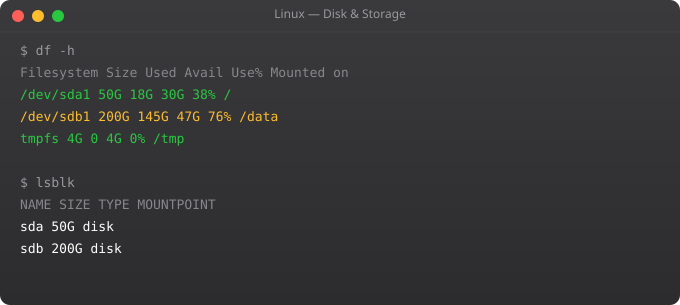

Linux Full Tutorial -- Part 8: Cron Jobs & Task Scheduling

Every production Linux server needs automated maintenance. Backups must run nightly. Log files must rotate weekly. Disk usage must be checked hourly. Expired sessions must be cleaned daily. Doing these manually is unreliable and exhausting. Cron is the built-in Linux job scheduler that handles all of this automatically.
Cron Syntax
# Format: minute hour day month weekday command
# * * * * * command
# | | | | |
# | | | | +-- Day of week (0-7, 0 and 7 = Sunday)
# | | | +----- Month (1-12)
# | | +-------- Day of month (1-31)
# | +----------- Hour (0-23)
# +-------------- Minute (0-59)
# Examples:
# Every minute
* * * * * command
# Every hour at minute 0
0 * * * * command
# Every day at 2:30am
30 2 * * * command
# Every Monday at 9am
0 9 * * 1 command
# Every 5 minutes
*/5 * * * * command
# 1st of every month at midnight
0 0 1 * * commandManaging Crontabs
crontab -e # Edit your crontab (uses EDITOR variable)
crontab -l # List your crontab
crontab -r # Remove your crontab (CAREFUL!)
crontab -u ubuntu # View/edit another user's crontab (as root)
# System-wide cron directories
ls /etc/cron.d/ # Per-application cron files
ls /etc/cron.daily/ # Scripts run daily by system
ls /etc/cron.hourly/ ls /etc/cron.weekly/ /etc/cron.monthly/Real Cron Job Examples
# Edit crontab with: crontab -e
# Daily database backup at 1am
0 1 * * * /home/ubuntu/scripts/backup-db.sh >> /var/log/backup.log 2>&1
# Check disk every 15 minutes, alert if over 85%
*/15 * * * * /usr/local/bin/check-disk.sh
# Rotate logs every Sunday at 3am
0 3 * * 0 /usr/sbin/logrotate /etc/logrotate.conf
# Restart application every night at 4am (memory leak workaround)
0 4 * * * systemctl restart myapp >> /var/log/restart.log 2>&1
# Clean temp files older than 7 days, run daily at 2am
0 2 * * * find /tmp -type f -mtime +7 -delete
# Sync S3 backup every 6 hours
0 */6 * * * aws s3 sync /data/backups s3://my-backups/daily/Output and Logging
# By default, cron emails output to the user
# Silence output entirely:
* * * * * command > /dev/null 2>&1
# Log stdout and stderr to a file:
* * * * * command >> /var/log/mycron.log 2>&1
# Log with timestamps:
0 2 * * * echo "$(date) Starting backup" >> /var/log/backup.log && /scripts/backup.sh >> /var/log/backup.log 2>&1
# View cron logs
grep CRON /var/log/syslog
journalctl -u cronsystemd Timers -- Modern Alternative
# /etc/systemd/system/backup.service
[Unit]
Description=Database Backup
[Service]
Type=oneshot
User=ubuntu
ExecStart=/home/ubuntu/scripts/backup-db.sh
# /etc/systemd/system/backup.timer
[Unit]
Description=Run backup daily at 2am
[Timer]
OnCalendar=daily
OnCalendar=*-*-* 02:00:00
Persistent=true
[Install]
WantedBy=timers.target
# Enable and check:
systemctl daemon-reload
systemctl enable --now backup.timer
systemctl list-timers
journalctl -u backup.service -fThe at Command
echo "/scripts/maintenance.sh" | at 2:30am
echo "/scripts/deploy.sh" | at now + 10 minutes
echo "/scripts/task.sh" | at 14:00 tomorrow
atq # List pending at jobs
atrm 3 # Remove job number 3Frequently Asked Questions
How do I debug a cron job that is not running?
Check: 1) crontab -l shows your job. 2) Cron service running: systemctl status cron. 3) Script has execute permission: ls -la script.sh. 4) Use full paths for commands (/usr/bin/python3 not python3). 5) Check /var/log/syslog for cron entries. 6) Test with: >> /tmp/test.log 2>&1 to capture all output.
Why does my cron job work manually but not in cron?
Cron runs with a minimal environment -- no PATH, no aliases, no sourced profile files. Always use full paths: /usr/bin/python3 not python3. Add PATH=/usr/local/bin:/usr/bin:/bin at the top of your crontab. Source your profile if needed: bash -l -c "your-command"
What is 2>&1 in cron jobs?
2>&1 redirects stderr (file descriptor 2) to stdout (file descriptor 1). Combined with >> /var/log/file.log, it captures both normal output and errors to the log file. Without it, error messages disappear or get emailed -- making debugging very difficult.
What is the difference between cron and systemd timers?
Cron is simpler and widely understood. systemd timers integrate with journald for better logging, support dependencies (run after network is up), catch up on missed runs (Persistent=true), and support calendar expressions. Use systemd timers for new production systems.
How do I run a cron job as root?
sudo crontab -e edits root's crontab. Or add jobs to /etc/cron.d/ with a user field: "0 2 * * * root /scripts/backup.sh". System cron directories (/etc/cron.daily/) also run as root. Prefer running as a specific non-root user when possible.
In Part 9, we cover package management -- installing, updating, and managing software on Linux servers.
Key takeaways
- Every script starts with a shebang (`#!/bin/bash`). Set `set -euo pipefail` at the top — it'll save you from silent failures.
- Variables, conditionals, loops, functions — that's 80% of bash scripting. The rest is reading existing scripts.
- Bash is fine for short scripts (under ~200 lines). Anything longer, switch to Python. I've maintained 1,000-line bash scripts. I don't recommend it.
- Always quote variables (`"$var"`, not `$var`). Unquoted variables with spaces or globs are the #1 source of bash bugs.
Advanced Cron Patterns for Production
#!/bin/bash
# Production-grade cron script with locking and alerting
LOCKFILE="/tmp/daily-cleanup.lock"
LOG="/var/log/daily-cleanup.log"
SLACK_WEBHOOK="${SLACK_WEBHOOK_URL}"
log() { echo "[$(date +%Y-%m-%dT%H:%M:%S)] $1" | tee -a $LOG; }
notify_slack() {
[ -n "$SLACK_WEBHOOK" ] && curl -s -X POST -H "Content-type: application/json" -d "{"text": "$1"}" "$SLACK_WEBHOOK" > /dev/null
}
# Prevent concurrent runs with flock
exec 9>"$LOCKFILE"
if ! flock -n 9; then
log "Another instance is already running. Exiting."
exit 0
fi
trap "log 'Script complete'; flock -u 9; rm -f $LOCKFILE" EXIT
trap "log 'Script failed!'; notify_slack ':red_circle: Daily cleanup FAILED'" ERR
set -e
log "Starting daily cleanup"
find /tmp -type f -mtime +1 -delete
find /var/log/myapp -name "*.log" -mtime +30 -exec gzip {} \;
aws s3 sync /var/backups s3://my-backups/daily/ --storage-class STANDARD_IA
notify_slack ":white_check_mark: Daily cleanup completed successfully"Cron Security Best Practices
# Restrict who can use cron
echo "ubuntu" | sudo tee /etc/cron.allow # Only ubuntu user
echo "ALL" | sudo tee /etc/cron.deny # Deny all others
# Set correct ownership and permissions on crontab
ls -la /etc/cron.*
# drwxr-xr-x root root /etc/cron.d
# drwxr-xr-x root root /etc/cron.daily
# All cron directories: owned by root, 755 permissions
# Check for world-writable cron files (security risk)
find /etc/cron* -perm -o+w -type f 2>/dev/null
# Run cron jobs with minimal environment
# Add this at top of cron scripts:
export HOME=/home/ubuntu
export PATH=/usr/local/bin:/usr/bin:/bin
export LANG=en_US.UTF-8